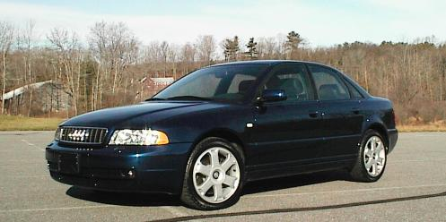
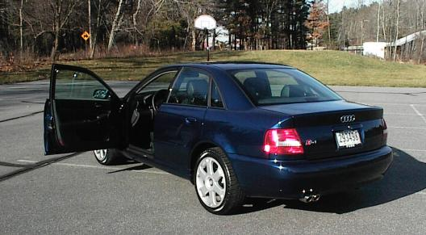
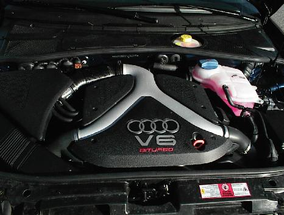
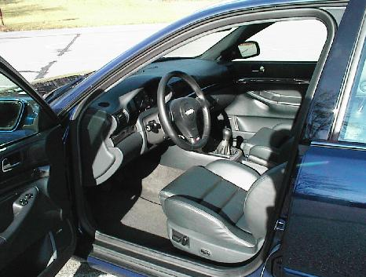
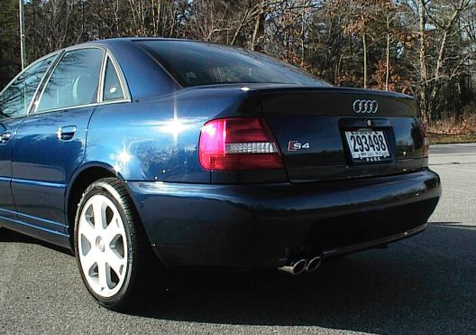
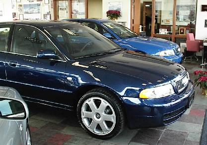
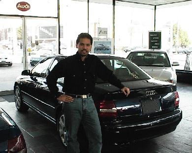

This section contains information about my 2001 Audi S4. Please enjoy.
The pictures are taken the day I picked up the car. I have to admit that this car was not as exciting to pick up as my Boxster was.
This Audi is Santorin Blue exterior, Onyx interior, Bose speakers, cold-weather package. It has a 2.7 V6, twin turbo that puts out 258 ft/lbs of torque @ 1850 rpms and 250hp. The wheels are 17" Avus rims with 225/45 Pirelli P6000s (winter tires are same size bug Dunlop M2 WinterSport SP).
One cool thing about the S4 is that the doors open really wide. There are three positions and below is the widest position.

My favorite part about the car is the engine -- it looks good and has lots of torque. I haven't stalled the car yet and probably never will; there is so much torque it's actually hard to stall it. All that nice torque makes for quick takeoffs and plenty of power for oversteer recovery. It also makes for low gas mileage (at least for a daily driver/commuter) as I've been getting about 20mpg.

The interior is nice. It has all the nice comforts one would want in a luxury sedan. My favorites are the heated seats and stereo system.

From the exterior, the car is very understated. It looks similar to the lesser powered A4. But to the trained eye, you can easily identify the S4. For example the backend has the S4 badging, the wheels are 17" standard, and the front has six grill openings.

Also note the big 17" Avus wheels.

All in all, you will find that the owner is very happy with this car.

Secondary owner is also very happy with it -- even as a backseater.